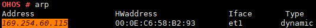

arp¶
Command Function¶
On an Ethernet, hosts communicate with each other using MAC addresses (non-IP addresses). Therefore, IP addresses must be converted into MAC addresses so that hosts can communicate with each other on a LAN (Ethernet). To resolve this issue, the host stores a table containing the mapping between IP addresses and MAC addresses, that is, the ARP cache table. When the host needs to send an IP packet to the destination IP address on a LAN, the host can query the destination MAC address from the ARP cache table. The ARP cache table is maintained by the TCP/IP protocol stack. You can run the arp command to view and modify the ARP cache table.
Parameter Description¶
Table 1 Parameters
Parameter | Description | Value Range |
|---|---|---|
No parameter | Prints the content of the entire ARP cache table. | N/A |
-i IF | Indicates the network interface. This parameter is optional. | N/A |
-s IPADDR HWADDR | Adds an ARP entry. The second parameter is the IP address and MAC address of the other host on the LAN. | N/A |
-d IPADDR | Deletes an ARP entry. | N/A |
Usage¶
The arp command is used to query and modify the ARP cache table of the TCP/IP protocol stack. If ARP entries for IP addresses on different subnets are added, the protocol stack returns a failure message.
This command can be used only after the TCP/IP protocol stack is enabled.
Example¶
Example:
Enter arp.
Figure 1 Printing the entire ARP cache tableTable 2 Output description
Parameter
Description
Address
Indicates the IPv4 address of a network device.
HWaddress
Indicates the MAC address of a network device.
Iface
Indicates the name of the interface used by the ARP entry.
Type
Indicates whether the ARP entry is dynamic or static. A dynamic ARP entry is automatically created by the protocol stack, and a static ARP entry is added by the user.